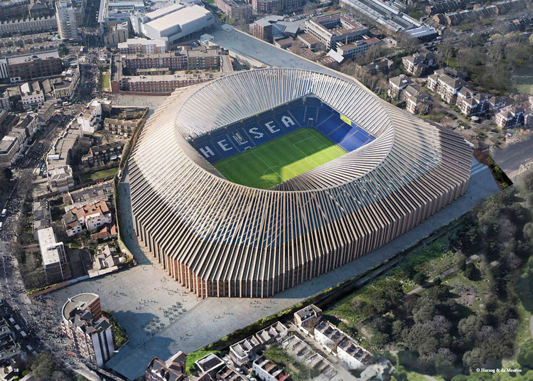

Лондон

Биг Бен

Стадионът Уембли

Лондонското Око

Тоуър Бридж
Денят в Лондон
Сутрин
- Начало от Лондонцкото Око
- Започнете деня със зашеметяващи гледки към града от символичното Лондонцкото Око.
- Заснемете панорамни снимки на хоризонта и река Темза.
- Посещение на Тауър Бридж
- Отидете до историческия Тауър Бридж, архитектурно чудо.
- Разгледайте Тауър Бридж Експозиция и се насладете на гледки към Лондон.
Обяд
- Обяд в Боро Маркет
- Отидете до Боро Маркет за разнообразие от хранителни възможности.
Следобед
- Разглеждане на Тауър от Лондон
- Поглътнете се в историята в Тауър от Лондон
- Открийте Кралските скъпоценности и разгледайте средновековната архитектура.
- Стадион Уембли
- Пътувайте до Стадион Уембли, атракция за футболните ентусиасти.
- Проведете екскурзия в стадиона, за да научите за неговата богата спортна история.
Вечер
- Вечеря в Саутбанк
- Завършете деня с вкусна вечеря в Саутбанк
- Насладете се на живописната атмосфера и красивите гледки към реката.
Тази програма обединява иконични забележителности, исторически обекти и вълнението от футболните стадиони, предлагайки разнообразно преживяване от богатата култура и спортна наследба на Лондон.